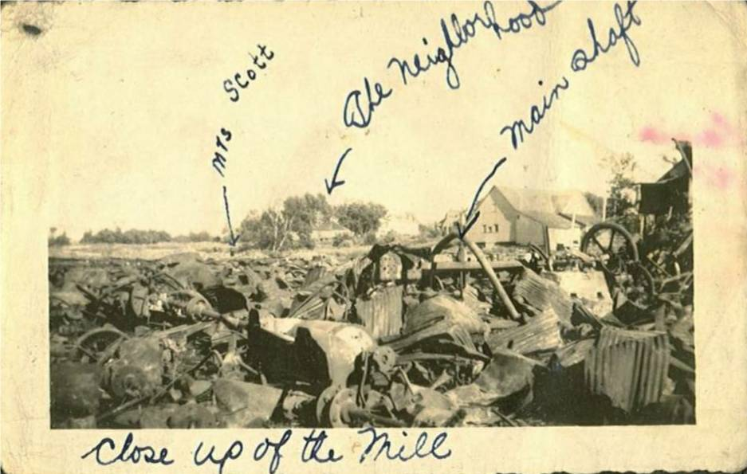
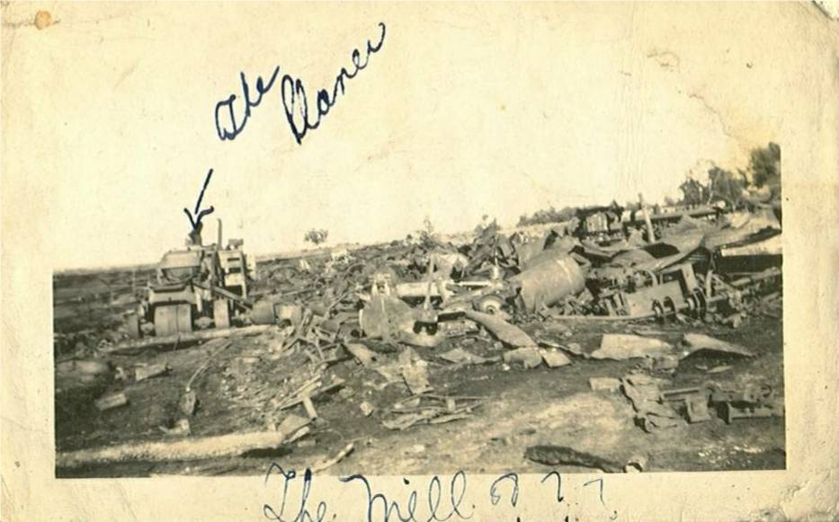

The Family Chronicle
No. 130 January 17, 2006
____________________________________________________________________

The remnants of A&R Loggie’s Sawmill in Loggieville, NB

A&R Loggie’s Mill
The A&R Loggie Co. was incorporated in 1881 at Black Brook, later renamed Loggieville. As I recall, Aunt Tine said that Andrew Loggie, the oldest had started by peddling goods from door to door.
They were exporters of salmon, smelts, trout, haddock, etc and also packaged (frozen and canned) Eagle Brand, Old Oaken Bucket and Sea Gull. Their sawmill, producing rough and finished lumber , shingles and laths, was a large operation and took up all of the space on the waterfront across from their general store. The store had a central cashier; clerks at the counter made up the bill, stuffed the bill and your money into a little hollow container, the container was whisked across the store to the cashier who checked the bill, made change and returned the bill and change to the clerk.
In Loggieville alone, the company employed about 150 workers. Part of a worker’s pay packet was a credit that had to be used at their store.
In the summer, Loggie’s bought, cleaned, froze and shipped blueberries. Once when travelling with Brydone to Bathurst, he drove in to a blueberry barren along the highway to show where the picking took place. Both A & R Loggies and W S Loggie”s delivered
groceries, flour and feed throughout the neighbouring communities. Mother would phone her list and the next day the truck would deliver her groceries to the door. As I recall, the came twice a week to our area and delivered as far east as Escuminac.
The sawmill was completely destroyed by fire on august 4, 1944. I recall being wakened by a commotion to find a glow in the sky to the west of our place. John, Ken and probably Norm were getting ready to drive to Loggieville to see the fire and they took me along. The boys may have even spotted the fire on the way home from a dance and decided to change clothes before driving out.
The company was founded by Andrew and Robert Loggie; Frank Loggie joined later. By 1940, all three were dead. Shortly after the fire the company was sold
The photo above was given to me by Stephen Chase whose father, Hartley Chase, was probably living in Loggieville at the time.
The Family Chronicle (Copyright) is an occasional newsletter published by Don Glendenning and posted on the family website. It is intended to share information about my family, community and the times in which I grew up. While every effort is made to be accurate, errors are likely to occur. Comments, enquiries and information may be sent to 62 Queen Elizabeth Drive, Charlottetown, PEI, C1A 3A9. Tel: 902 892 5859. Email: dglende@pei.sympatico.ca Web: www.glendenning.net/don